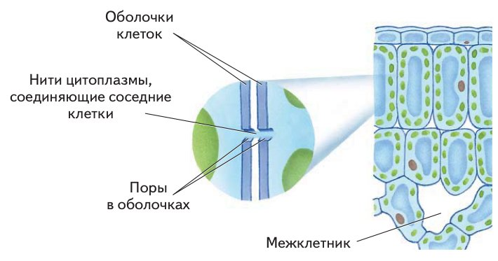
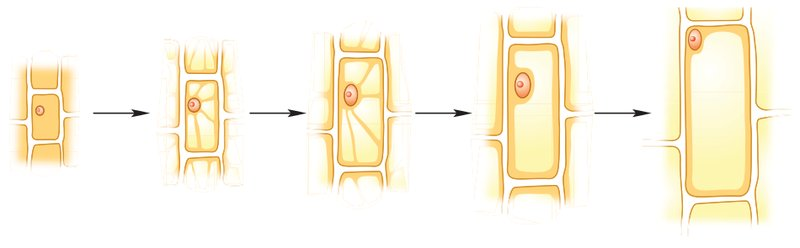
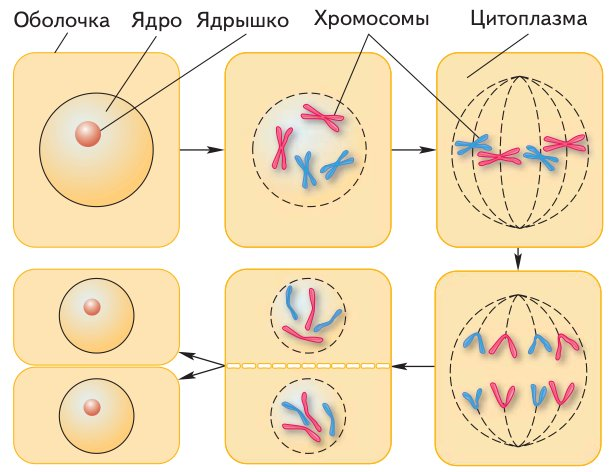
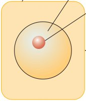
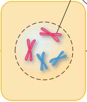
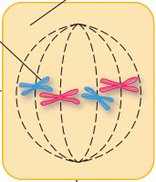
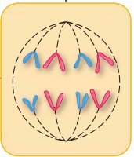
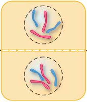
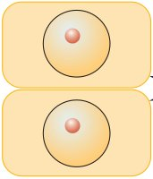

Жизнедеятельность клетки, её деление и рост
Амина, ты уже знаешь, из чего состоит клетка. Теперь посмотрим, как она живёт, делится и растёт.
Представь, что клетка — это крошечный город за крепкой стеной. Через ворота в город привозят еду и воду. На электростанциях добывают энергию. Мусор складывают на склады или вывозят за стену.
Город отзывается на погоду: в тепло жизнь на улицах кипит, а в сильную жару замирает. А когда городу становится тесно, рядом появляется второй — точно такой же, по тем же чертежам.
Так живёт и клетка: питается, дышит, избавляется от ненужного, отвечает на тепло и холод, растёт и делится. Об этом § 4. Вот четыре главные части:
У каждого шага написано, на какой странице учебника искать. Внизу шага есть «Подробнее, как в учебнике»: там всё, что есть на этих страницах, ничего не пропущено. Сначала учи по коротким шагам, а перед уроком открой «подробнее».
Надпись вверху шага подскажет, откуда он: синяя — из учебника, золотая — задание учебника, оранжевая — сверх учебника (пересказ, словарик, игры, самопроверка). В «Содержании» шаги так же разбиты на группы.
Подробнее, как в учебнике · с. 26
- Параграф называется «Жизнедеятельность клетки, её деление и рост», он на страницах 26–29, в главе 1 «Растение — живой организм».
- В начале параграфа — рамка «Вспомните» с тремя вопросами. Они разобраны на шаге 2.
- Разделы параграфа: «Процессы жизнедеятельности в клетке» (с. 26), «Обмен веществ и превращение энергии», «Раздражимость», «Тургор» (все три — с. 27), «Деление клеток» (с. 28).
- Рисунки параграфа: рис. 16 «Взаимодействие соседних клеток» (с. 26), рис. 17 «Рост клетки» (с. 27), рис. 18 «Деление клетки» (с. 28). Все три есть в шагах.
- В конце, на с. 29: «Запомните» (девять слов — в словарике), «Проверьте себя» (восемь вопросов), «Подумайте!» (последний шаг) и «Моя лаборатория» с исследованием «Движение цитоплазмы в клетке» (шаг 12).
Сначала вспомни
В начале параграфа учебник просит вспомнить три вещи из прошлых уроков. Ответь про себя. Если не получается, подсказка скажет, где искать.
Какие процессы жизнедеятельности вам известны?
Подсказка: подумай, что каждый день делает любое живое существо — и ты, и кошка, и берёзка во дворе. Что им всем нужно, чтобы жить и становиться больше?
Что такое хлоропласты? Где они находятся в клетке?
Подсказка: это § 2 «Строение растительной клетки». Разгадка спрятана в самом слове: греческое «хлорос» значит «зелёный». Вспомни, что окрашивает лист в зелёный цвет и в какой части клетки плавают органоиды.
Что такое хромосомы? Какова их роль в клетке?
Подсказка: тоже § 2, рассказ про ядро. Слово из греческого: «хрома» — краска, «сома» — тельце. Вспомни, какую информацию они хранят.
Ответы на вопросы 2 и 3 пригодятся уже на шагах 6 и 9.
Что умеет живая клетка?
Клетка — не кирпичик, а живое существо в миниатюре. Живые клетки дышат, питаются, растут и размножаются.
Жизнедеятельность — это вся работа, из которой состоит жизнь: питание, дыхание, рост, размножение. У тебя так же: ты ешь, дышишь и растёшь.
Как в клетку попадает еда? Нужные вещества входят в неё сквозь клеточную мембрану, и не кусочками, а в виде растворов — растворёнными в воде, как сахар в чае. Приходят они из внешней среды и из других клеток.
Внутри живой клетки всё время идут сложные и очень разные реакции — одни вещества превращаются в другие. Если их ход нарушится, клетка может серьёзно «заболеть» и даже погибнуть.
А почему в виде растворов?
Мембрана — тончайшая плёнка. Сквозь неё не пролезет даже крошечная крупинка, а вот вещество, растворённое в воде, проходит. Так и растение не может «съесть» крупинку удобрения: сначала она должна раствориться в воде в почве.
Подробнее, как в учебнике · с. 26
- Раздел «Процессы жизнедеятельности в клетке». Живые клетки дышат, питаются, растут и размножаются.
- Вещества, необходимые для жизнедеятельности клеток, поступают в них сквозь клеточную мембрану в виде растворов из внешней среды и из других клеток.
- В любой живой клетке постоянно идут сложные и многообразные реакции, необходимые для её жизнедеятельности. Если их ход нарушается, это может привести к серьёзным изменениям жизнедеятельности клеток и даже к их гибели.
Цитоплазма связывает и движется
В растении клетки не сидят каждая в своей запертой коробочке. Цитоплазма одной клетки обычно не изолирована, то есть не отделена наглухо, от цитоплазмы соседних клеток.
Соседние клетки соединяют тонкие нити цитоплазмы. Они проходят через мембрану и через поры — крошечные отверстия в клеточных оболочках. Так клетки связаны друг с другом в единое целое, как дома одной улицы, соединённые трубами.

А ещё цитоплазма всё время движется внутри клетки. Сама она прозрачная, поэтому движение заметно по органоидам: их несёт, как листики по ручью.
Движение цитоплазмы помогает перемещать по клетке питательные вещества и воздух. Чем активнее живёт клетка, тем быстрее движется цитоплазма.
В конце параграфа есть исследование: под микроскопом видно, как в клетках листа элодеи «плывут» зелёные хлоропласты. Оно разобрано на шаге 12.
Подробнее, как в учебнике · с. 26
- В многоклеточных организмах цитоплазма одной клетки обычно не изолирована от цитоплазмы других клеток, расположенных рядом. Нити цитоплазмы соединяют соседние клетки, проходя через мембрану и поры в клеточных оболочках, и связывают соседние клетки друг с другом в единое целое (рис. 16).
- Рис. 16 «Взаимодействие соседних клеток». Справа нарисованы клетки растения, часть их увеличена в круге слева. Подписи: оболочки клеток; нити цитоплазмы, соединяющие соседние клетки; поры в оболочках; межклетник.
- Цитоплазма постоянно перемещается внутри клетки. Это заметно по движению органоидов. Движение цитоплазмы способствует перемещению в клетках питательных веществ и воздуха. Чем активнее жизнедеятельность клетки, тем больше скорость движения цитоплазмы.
Что держит клетки вместе?
Между оболочками соседних клеток есть особый «клей» — межклеточное вещество. Пока оно цело, клетки держатся вместе. Если оно разрушается, клетки разъединяются.
Ты это видела на кухне! Когда варят картошку, межклеточное вещество в клубнях разрушается, и варёная картошка рассыпается. Так же легко разъединяются клетки в спелых арбузах и помидорах (томатах) и в рассыпчатых яблоках.
Живые растущие клетки могут менять форму. Их оболочки округляются и местами отходят друг от друга. В этих местах межклеточное вещество разрушается, и появляются межклетники — промежутки между клетками, заполненные воздухом.
Внизу справа на рис. 16 (шаг 4) подписан межклетник — светлый промежуток между округлыми клетками.
Попробуй дома
Сравни сырую и варёную картошку. Сырую пальцами не раздавишь, а варёная легко разминается в пюре. Это при варке разрушилось межклеточное вещество, и клетки разошлись.
Подробнее, как в учебнике · с. 26
- Между оболочками соседних клеток находится особое межклеточное вещество. Если межклеточное вещество разрушается, клетки разъединяются. Так происходит при варке клубней картофеля. В спелых плодах арбузов и томатов, в рассыпчатых яблоках клетки тоже легко разъединяются.
- Живые растущие клетки растения могут изменять свою форму. Их оболочки округляются и местами отходят друг от друга. В этих участках межклеточное вещество разрушается. Возникают межклетники, заполненные воздухом (межклетник подписан на рис. 16).
Как клетка питается и дышит
Растение берёт нужные для жизни вещества из воздуха и почвы. В клетки они попадают в виде растворов сквозь клеточную оболочку — из других клеток и из межклетников.
Клетки с хлоропластами — настоящие кухни. На свету они делают из воды и углекислого газа органические вещества, богатые энергией. Это фотосинтез («фото» — свет, «синтез» — соединение).
Из минеральных веществ, полученных снаружи, и из органических веществ, сделанных самой клеткой, она строит всё, что ей нужно: новые вещества и свои собственные части.
Клетка дышит
Как и большинству живых организмов, клеткам кроме питательных веществ нужен кислород. Он попадает внутрь клетки и направляется к митохондриям — «энергетическим станциям» клетки.
В митохондриях под действием кислорода часть органических веществ расщепляется (распадается) до воды и углекислого газа. Это клеточное дыхание. При распаде выделяется энергия, а она нужна клетке для всей её жизни.
А ненужные вещества клетка складывает в вакуоли или удаляет наружу. Это выделение.
А почему митохондрии — «энергетические станции»?
Вспомни костёр: дрова горят, и выделяется тепло. В митохондриях органические вещества тоже распадаются с помощью кислорода и отдают энергию, только медленно и без огня. Эту энергию клетка тратит на всё: на движение цитоплазмы, на рост, на деление.
Подробнее, как в учебнике · с. 27
- Раздел «Обмен веществ и превращение энергии». Растения поглощают необходимые для их жизни вещества из воздуха и почвы. Вещества, необходимые для жизнедеятельности клеток, поступают в них сквозь клеточную оболочку в виде растворов, из других клеток и межклетников.
- В клетках, содержащих хлоропласты, из воды и углекислого газа на свету в результате фотосинтеза образуются органические вещества, богатые энергией.
- Минеральные вещества, получаемые извне, и синтезированные (созданные самой клеткой) органические вещества клетки используют для образования нужных им веществ и для построения клеточных структур.
- Как и большинству организмов, помимо питательных веществ клеткам необходим кислород. Молекулы кислорода поступают внутрь клетки и направляются к «энергетическим станциям» клетки — митохондриям. В митохондриях под действием кислорода часть органических веществ расщепляется до воды и углекислого газа. Этот процесс называется клеточным дыханием. При распаде органических веществ выделяется энергия, необходимая для жизнедеятельности клетки.
- Ненужные вещества клетка накапливает в вакуолях или удаляет наружу. Этот процесс называют выделением.
Клетка отвечает на тепло
Дотронься до горячей кружки — рука сама отдёрнется. Ты ответила на то, что случилось вокруг. Клетки тоже так умеют.
Раздражимость — свойство всех живых организмов: они реагируют (отвечают) на внешние и внутренние воздействия. Внешние приходят снаружи: тепло, холод, свет. Внутренние возникают в самом организме.
Пример из учебника: от температуры меняется скорость движения цитоплазмы в клетках растения. Обычно быстрее всего цитоплазма движется при 37 °C, а при температуре выше 40–42 °C движение прекращается.
37 °C — цитоплазма, как правило, движется быстрее всего.
Выше 40–42 °C — движение останавливается.
А почему это называют раздражимостью?
Тепло — это воздействие на клетку. Цитоплазма стала двигаться быстрее или остановилась — это ответ клетки. Воздействие и ответ на него — это и есть раздражимость. «Раздражать» здесь значит не «злить», а «действовать на что-то».
Подробнее, как в учебнике · с. 27
- Раздел «Раздражимость». Для клеток характерно такое свойство всех живых организмов, как раздражимость, то есть они реагируют на внешние и внутренние воздействия.
- Пример раздражимости — изменение интенсивности движения цитоплазмы в растительных клетках под влиянием температуры. Установлено, что наиболее интенсивным движение цитоплазмы, как правило, бывает при температуре 37 °C, а уже при температуре выше 40–42 °C оно прекращается.
Тургор и рост клетки
Надуй воздушный шарик: он тугой и держит форму. Выпусти воздух — сморщится. Клетка растения похожа на такой шарик, только внутри не воздух, а сок.
Тургор (от латинского слова «тургор» — вздутие, наполнение) — это внутреннее давление на клеточную оболочку. Давит клеточный сок, который находится в вакуолях.
Вакуоли появляются в клетке постепенно. В молодой клетке сока мало, и он в мелких вакуолях. Клетка растёт, сока становится больше, вакуоли увеличиваются, а когда соприкасаются — сливаются. В итоге получаются одна-две большие вакуоли.

Когда воды мало, давление клеточного сока уменьшается, и мы видим, как растение вянет.
Летом в Каспийске бывает очень жарко. Посмотри на цветы на клумбе в полдень: листья поникли. А вечером после полива они снова упругие. Вода вернулась в клетки, клеточный сок снова давит на оболочки — тургор восстановился.
Подробнее, как в учебнике · с. 27
- Раздел «Тургор». Тургор (от лат. тургор — вздутие, наполнение) клетки обеспечивает внутреннее давление на клеточную оболочку. Давление создаёт клеточный сок, находящийся в вакуолях.
- Вакуоли в растительных клетках появляются постепенно. В молодых клетках клеточного сока мало, поэтому он находится в мелких вакуолях. По мере роста клеток количество клеточного сока увеличивается (рис. 17). Постепенно вакуоли увеличиваются и при соприкосновении сливаются. В результате образуются одна-две большие вакуоли.
- При недостатке воды давление клеточного сока уменьшается, и мы наблюдаем увядание растений.
- Рис. 17 «Рост клетки» (вверху с. 27): пять рисунков одной клетки, соединённых стрелками. Клетка становится всё больше, а вакуоли — всё крупнее.
Зачем клетке делиться?
Как из крошечного семечка вырастает огромное дерево? Клеток в нём становится всё больше. А новые клетки берутся только из старых — делением.
Деление клетки — это когда из одной клетки получаются две. На нём основаны все формы размножения. Благодаря делению клеток организмы не только размножаются, но и растут.
Делению клетки предшествует (идёт раньше него) деление ядра. Перед началом деления ядро увеличивается, и в нём становятся хорошо заметны хромосомы. Ты уже знаешь, что они передают наследственные признаки от клетки к клетке.

Верхний ряд — слева направо. Потом стрелка вниз, и нижний ряд — справа налево. Последняя картинка, внизу слева, — две новые клетки. Все шесть картинок по очереди — на следующем шаге.
А что такое наследственные признаки?
Это то, что передаётся от родителей к потомкам: например, какой формы листья и какого цвета цветки у растения. Сведения об этом хранятся в хромосомах.
Подробнее, как в учебнике · с. 28
- Раздел «Деление клеток». В основе всех форм размножения лежит деление клетки (рис. 18). В результате деления клеток организмы не только размножаются, но и растут.
- Делению клетки предшествует деление ядра. Перед началом деления клетки ядро увеличивается, и в нём становятся хорошо заметны хромосомы. Вы уже знаете, что они передают наследственные признаки от клетки к клетке.
- Рис. 18 «Деление клетки» (вверху с. 28): шесть рисунков, соединённых стрелками. Подписи: оболочка, ядро, ядрышко, хромосомы, цитоплазма.
Как делится клетка: по шагам
Это рисунок 18 по кусочкам, в том порядке, куда ведут стрелки.






В результате сложного процесса каждая хромосома как бы копирует себя. Получаются две одинаковые части — хроматиды. Представь, что ты сняла ксерокопию страницы и держишь в руках две одинаковые.
В ходе деления хроматиды расходятся к разным полюсам клетки, то есть к двум противоположным её краям.
В ядре каждой из двух новых клеток хромосом оказывается столько же, сколько было в материнской. И это копии хромосом материнской клетки, поэтому новые клетки наследственно похожи на неё.
В центре клетки из клеточной мембраны образуется перегородка, и получаются две новые дочерние клетки. Всё содержимое цитоплазмы тоже делится между ними поровну.
Материнская и дочерние — это как?
Клетку, которая делится, называют материнской, а две новые — дочерними. Будто мама-клетка и две дочки-близняшки. У «близняшек» такие же хромосомы, как у мамы.
Подробнее, как в учебнике · с. 28
- В результате сложного процесса каждая хромосома как бы копирует себя. Образуются две одинаковые части (хроматиды), которые в ходе деления расходятся к разным полюсам клетки.
- В ядре каждой из двух новых клеток хромосом оказывается столько же, сколько их было в материнской клетке. Важно, что эти хромосомы являются копиями хромосом материнской клетки: это обеспечивает наследственное сходство дочерних клеток с исходной материнской.
- В центре клетки из клеточной мембраны образуется перегородка, и возникают две новые дочерние клетки. Всё содержимое цитоплазмы также равномерно распределяется между двумя новыми клетками.
Молодая и старая клетка
Как отличить молодую клетку от старой? Смотри, где ядро и сколько вакуолей.
Молодая клетка
Ядро в центре. В цитоплазме много мелких вакуолей. Умеет делиться.
Старая клетка
Обычно одна большая вакуоль, поэтому цитоплазма с ядром прижата к оболочке. Делиться уже не может.
Сравни с рис. 17 на шаге 8: там видно, как молодая клетка становится старой.
Кто открыл деление клеток
Деление клеток открыл известный немецкий учёный Рудольф Вирхов в 1858 году. Он доказал, что все клетки образуются из других клеток путём деления. Тогда это было выдающимся открытием: раньше думали, что новые клетки возникают из межклеточного вещества.
Жизненный цикл клетки — время жизни клетки: с момента, когда она появилась при делении материнской клетки, до её собственного деления или гибели. Как у листа на дереве: весной появился, осенью опал.
Подробнее, как в учебнике · с. 28
- Ядро молодой клетки располагается в центре, а цитоплазма содержит много мелких вакуолей. В старой клетке обычно имеется одна большая вакуоль, поэтому цитоплазма, в которой находится ядро, прилегает к клеточной оболочке. Молодые клетки, в отличие от старых, способны делиться.
- Процесс деления клеток открыл известный немецкий учёный Рудольф Вирхов в 1858 году. Он доказал, что все клетки образуются из других клеток путём деления. В то время это было выдающимся открытием, так как раньше считалось, что новые клетки возникают из межклеточного вещества.
- Период существования клетки с момента её возникновения (путём деления материнской клетки) до собственного деления или гибели называют жизненным циклом клетки.
Движение цитоплазмы в клетке
Эту работу делают на уроке с микроскопом. Здесь всё, что написано в учебнике, и подсказки, чтобы ты знала, чего ждать. Вывод ты сделаешь сама, когда посмотришь в микроскоп.
Познакомиться с особенностями движения цитоплазмы.
Лист элодеи, вода, пипетка, пинцет, препаровальная игла, микроскоп, предметное и покровное стёкла.
Элодея — водное растение, его часто держат в аквариумах. Листья у неё очень тонкие, поэтому под микроскопом клетки видно насквозь. Препаровальная игла — острая игла на ручке, ею расправляют и передвигают кусочки на стекле.
Ход работы
Поместите веточку элодеи на несколько минут в тёплую воду. Приготовьте микропрепарат листа элодеи: отделите лист от стебля, положите его в каплю воды на предметное стекло и накройте покровным стеклом.
Подсказка: вода тёплая, но не горячая. Вспомни шаг 7: выше 40–42 °C цитоплазма останавливается. Покровное стекло опускай осторожно, сначала одним краем, чтобы под ним не осталось пузырьков воздуха.
Шаг 7 · РаздражимостьРассмотрите препарат под микроскопом. Найдите в клетках хлоропласты и пронаблюдайте за их движением.
Подсказка: хлоропласты — зелёные зёрнышки. Сама цитоплазма прозрачная, поэтому следи за ними: их несёт движущаяся цитоплазма. Наберись терпения и смотри минутку.
Шаг 4 · Цитоплазма движетсяЗарисуйте строение клетки листа элодеи.
Подсказка: рисуй простым карандашом одну-две клетки покрупнее. Подпиши то, что видишь: оболочку, цитоплазму, хлоропласты, а если заметно — ядро и вакуоль.
Определите направление движения цитоплазмы по изменению положения частиц. Стрелками укажите на рисунке направление движения цитоплазмы.
Подсказка: выбери одно зёрнышко и следи, куда оно сдвигается. Потом проверь на другом.
Используя информацию из текста параграфа 4, попробуйте определить, какая перед вами клетка — молодая или старая.
Подсказка: посмотри, где ядро и сколько вакуолей, и сравни с приметами на шаге 11.
Шаг 11 · Молодая и старая клеткаСделайте вывод о значении движения цитоплазмы для жизнедеятельности клеток.
Подсказка: перечитай шаг 4, что переносит цитоплазма, когда движется. Вывод напиши своими словами, опираясь на то, что увидела сама.
Шаг 4 · Цитоплазма движетсяПрепаровальная игла острая: не направляй её на себя и на соседа. Покровное стекло очень тонкое и легко ломается, не дави на него. Если у микроскопа есть зеркальце, не лови им солнце: такой яркий свет опасен для глаз.
Словарик: слова из «Запомните»
ИграНажми на карточку, и она перевернётся. Здесь все девять слов из рамки «Запомните» (с. 29). Словарик из двух частей, открой все карточки.
Словарик: ещё слова параграфа
ИграВторая часть: слова, которые встречаются в тексте параграфа.
Кто чем занят в клетке?
ИграУ каждой части клетки своя работа. Нажми на часть слева, потом на её работу справа.
Расставь по порядку
ИграКлетка делится. Нажимай на этапы по порядку: от клетки перед делением до двух новых клеток. Номера спрятаны, вспоминай сама.
Найди лишнее
ИграТри из одной компании, одно чужое. Найди чужое.
Проверь себя
Вопросы из учебника
Это вопросы из рамки «Проверьте себя» в конце параграфа, номера такие же, как в твоём учебнике. Рядом с каждым написано, на каком шаге искать ответ. Отвечай своими словами: так лучше запоминается, и учитель услышит, что ты поняла, а не заучила.
Какие процессы жизнедеятельности протекают в клетке?
Подсказка: начни с первой фразы параграфа (шаг 3), а потом пройди по разделам: обмен веществ, дыхание, выделение, раздражимость, деление.
Шаги 3, 6–9Какое значение для растения имеет движение цитоплазмы в клетках?
Подсказка: что переносит цитоплазма, когда движется? И как её скорость связана с тем, насколько активно живёт клетка?
Шаг 4 · Цитоплазма связывает и движетсяПочему не разъединяются клетки, из которых состоит растение?
Подсказка: что находится между оболочками соседних клеток? Что соединяет их цитоплазму? Вспомни и варёную картошку: почему она рассыпается.
Шаги 4–5Как поступают вещества в живую клетку?
Подсказка: ответь на два вопроса — в каком виде и откуда. Источники названы на шагах 3 и 6.
Шаги 3 и 6Что такое раздражимость?
Подсказка: дай определение и приведи пример из учебника, с температурой. Можно добавить и свой пример.
Шаг 7 · РаздражимостьЧто такое тургор? Какова его роль в клетке?
Подсказка: две части ответа. Что создаёт давление и на что давит? И что случается с растением, когда давление падает?
Шаг 8 · Тургор и рост клеткиКак происходит деление клеток?
Подсказка: рассказывай по рисунку 18. Что сначала происходит с ядром, что делают хромосомы, что появляется в центре клетки? Потренируйся в игре «Расставь по порядку» (шаг 16).
Шаги 9–10Чем объясняется рост органов растения?
Подсказка: здесь две причины. Одна — в первых фразах раздела «Деление клеток», другая — на рисунке 17.
Шаги 8–9Подробнее, как в учебнике · с. 29
- Все восемь вопросов рамки «Проверьте себя» перечислены выше.
- Рамка «Запомните»: движение цитоплазмы, межклеточное вещество, межклетники, хромосомы, раздражимость, тургор, деление клетки, клеточное дыхание, выделение. Все слова есть в словарике (шаг 13).
- Рамка «Подумайте!» — на последнем шаге. «Моя лаборатория» — на шаге 12.
Подумай: какое значение имеет то, что в ядре каждой из двух новых клеток хромосом столько же, сколько было в материнской?
Вот четыре «кирпичика» для ответа. Открой их по одному, а потом попробуй ответить своими словами, не подглядывая.
Живая клетка питается, дышит, выделяет ненужное, отвечает на воздействия и держит форму благодаря тургору, а размножается и растёт делением, при котором каждая дочерняя клетка получает копии всех хромосом материнской.